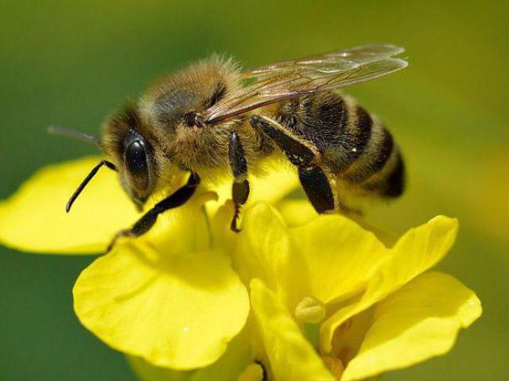
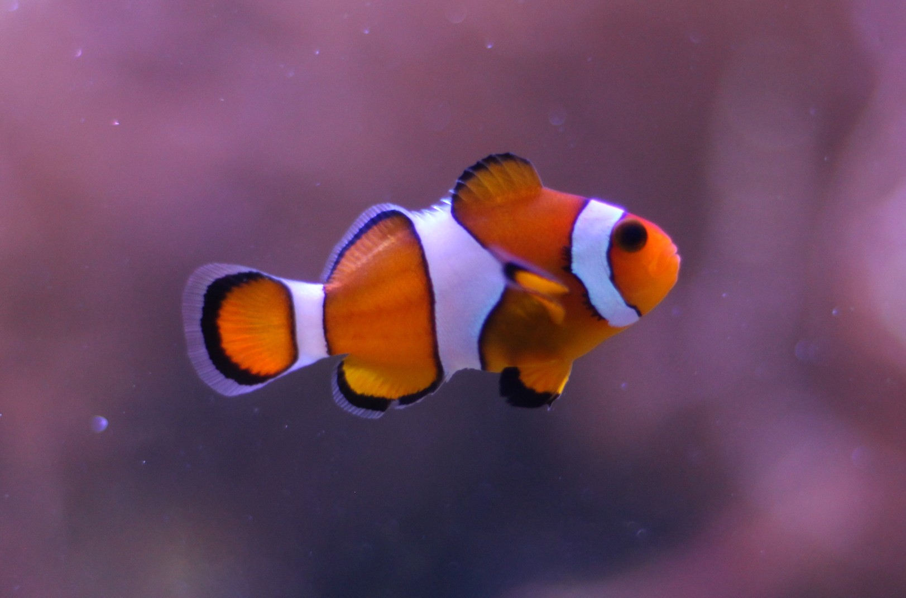

<h2><p>наш зоопарк досить інтерактивний і має декілька цікавих тварин:</p></h2>


<table border="1" width="70%">
  <tr>

    <th>тварина</th>
    <th> птах</th>
    
  </tr>

  
  <tr>

    <td><a href="kapybara.html">
      </td>
<td><a href="sprint.html">
  </td>
    
    
  </tr>
   <table border="2" width="70%">
     <tr>
<th>комаха</th>
       <th>риби</th>
     
</tr>

     <tr>
<td><a href="html.html">
  </td>
    <td><a href="zebra.html"></td>   
     </tr>
  
   </table>
  <h2> <a href="index.html">Повернутись назад</a></h2>


  
     
  


